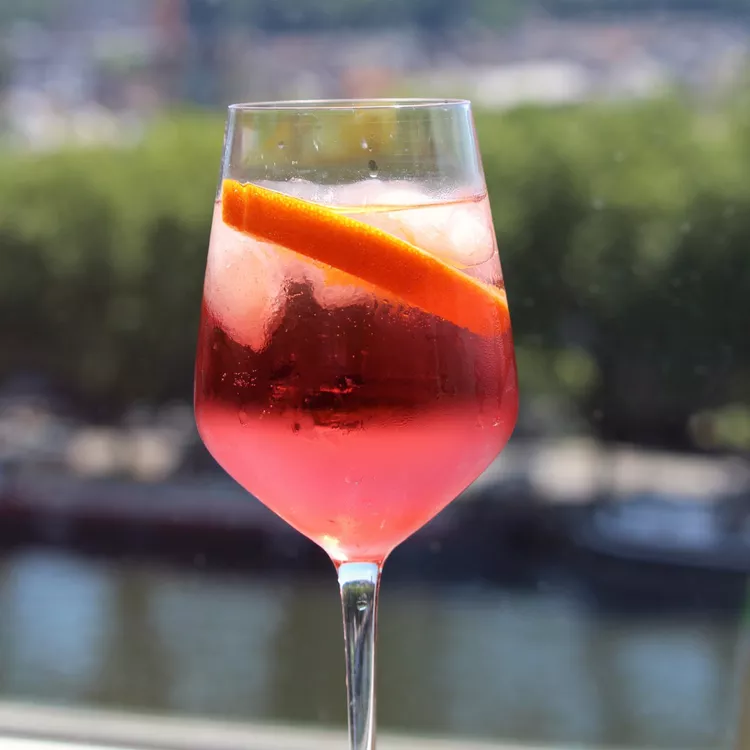

Aperol Spritz

Description:
Served as an aperitivo (a light pre-meal drink), the Aperol Spritz originated in Italy in 1919.
While you'd find Europeans enjoying this cocktail with Aperol, bubbly wine, and sparkling water ever since that time,
the Aperol Spritz didn't make it big in the U.S. until the 2010s.
But with only three ingredients and a light alcohol content, this easy-to-drink cocktail can now be found at brunches and happy hours around the world.
Ingredients:
- 4 ice cubes, or as desired
- 2 fluid ounces Prosecco
- 1 splash club soda
- 1.5 fluid ounce shot Aperol (or other bitter orange aperitif)
- 1 slice orange
Directions:
- Fill a wine glass with ice cubes
- Pour in Prosecco and club soda
- Top cocktail with Aperol
- Garnish with orange slice